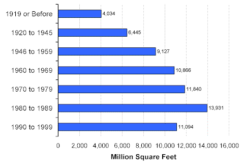
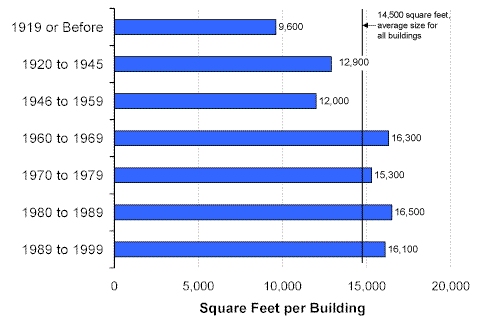

Year Constructed
More than one-third (37 percent) of the floorspace in commercial buildings was constructed since 1980 and more than one-half (55 percent) after 1969 (Figure 1). Less than one-third of floorspace was constructed before 1960.
Figure 1. Distribution of Floorspace by Year Constructed, 1999 Energy Information Administration
Commercial Buildings Energy Consumption Survey
Overall, relatively more buildings than floorspace were represented in the older age categories and more floorspace than buildings in the newer categories (see graphical comparison) because older buildings were smaller than more recently constructed buildings (Figure 2). Buildings constructed prior to 1960 were 11,700 square feet in size on average while those constructed after 1959 were 37 percent larger at 16,000 square feet per building.
Figure 2. Average Building Size by Year Constructed, 1999 Energy Information Administration
Commercial Buildings Energy Consumption Survey
Return to:
“1999 CBECS—Commercial Buildings Characteristics”
Specific questions may be directed to:
Alan Swenson
alan.swenson@eia.doe.gov
Phone: (202) 586-1129
FAX: (202) 586-0018
Release date: May 21, 2002
http://www.eia.gov/consumption/commercial/data/archive/cbecs/char99/year.html
If you are having any technical problems with this site, please contact the EIA webmaster at wmaster@eia.doe.gov.